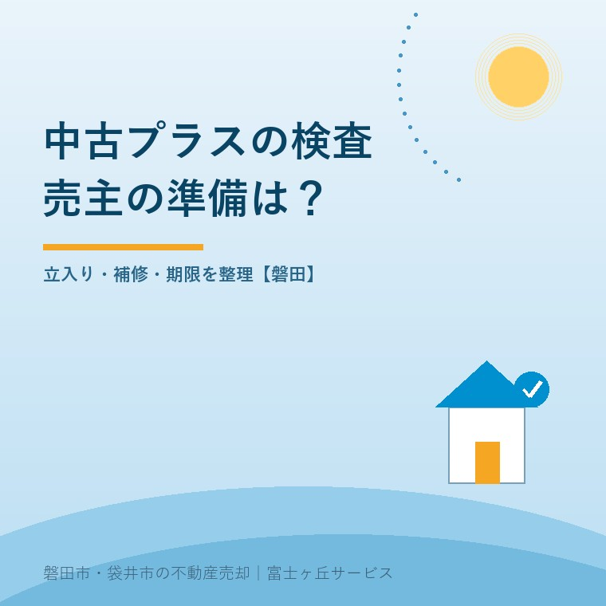
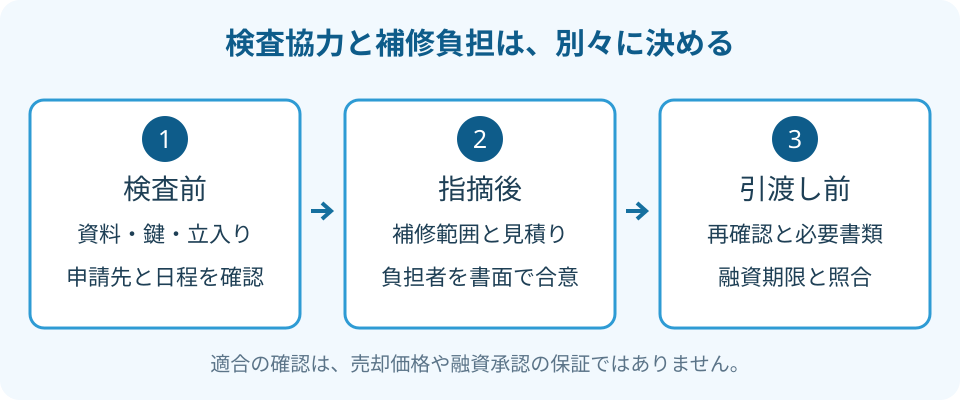

フラット35中古プラス｜売主が備える物件検査
2026年9月25日｜カテゴリ：売却実務・物件検査

この記事の要点
Q. 買主が中古プラスを使いたいそうです。売主は何をすればよいですか？
フラット35中古プラスへの対応は、検査の申請先、立入り日、必要資料を確認するところから始めます。検査への協力と補修費の負担は別に合意し、適合確認を売却価格や融資承認の保証と扱わないでください。磐田市・袋井市・森町では、富士ヶ丘サービスのような地域密着の会社に相談するという選択肢があります。
大石浩之（磐田市／不動産業）です。宅地建物取引士として、中古戸建てを売る側の準備を整理します。買主から「フラット35中古プラスを利用したい」と相談されたとき、売主が最初から制度の細部を覚える必要はありません。確認したいのは、誰が検査を手配し、家にいつ入り、指摘が出たら誰が判断するかです。
2026年4月の案内は、住宅の基準を確かめる入口
住宅金融支援機構「中古住宅 技術基準・物件検査手続のご案内」は、2026年4月1日更新です。掲載されたパンフレットについて、2026年4月現在の基準に基づくと明記しています。本記事は2026年9月25日に公式の案内と検査内容を確認しました。
同機構の「フラット35中古プラスの技術基準」では、通常の中古住宅の技術基準に加え、中古プラスの基準も満たす必要があると説明しています。追加項目だけを見るのではなく、中古住宅としての基準と合わせて確認する制度です。
私は、買主が使いたいローンに合わせて確認事項が見える点を評価します。売主にとっても、何を見てもらうのか分かれば資料や鍵を準備できます。ただ、「対応できます」と軽く返事をして、補修の範囲まで曖昧にするのは困ります。確認に協力することと、どこまでも費用を出すことは、同じ返事にしない方がよいと考えます。
建物の状態を調べる話でも、目的は一つではありません。建物状況調査と売主の準備で扱う調査を受けたからといって、中古プラスの手続きが自動的に済むとは考えないでください。依頼する検査の名称と、必要な書類を先に確認します。
戸建ての検査項目は、公式表の列を分けて読む
住宅金融支援機構の「フラット35中古プラス 物件検査内容」は、目視で確認できる範囲の劣化等について、検査箇所ごとの基準を示しています。表には一戸建て等とマンションの列があり、同じ扱いでない欄もあります。
例えば追加基準の「床」は、一戸建て等の欄が横線で、マンション側に具体的な基準が書かれています。「床も含めて全部同じ検査」と一括りにしないでください。ただし、追加表に横線があることを、戸建ての床は何も確認しなくてよいという意味にもできません。通常の中古住宅の基準が別にあるためです。
| 公式表にある箇所 | 確認内容の要旨 | 売主の準備として考えること |
|---|---|---|
| 天井 | 仕上げの著しい傷みや漏水の跡 | 気になる染みと修理記録を伝える |
| 階段・バルコニー | 部材の傷みや手すりの状態 | 安全に近づける通路を確保する |
| 雨樋・屋外に面する開口部 | 破損や建具の隙間・開閉状態など | 窓や出入口の鍵の場所を確かめる |
| 給排水・給湯設備 | 配管の接続部等の漏水やその跡 | 水回りの収納内を見られるか確認する |
表の中央は公式基準の要旨、右列は私が売主へ勧める準備です。すべての技術基準を転載した表ではありません。実際の検査範囲や準備物は、申請先の検査機関等へ確認してください。家族が危険な階段へ上ったり、屋根へ乗ったりして確認する必要はありません。
雨漏りらしい染みがあっても、売主の判断だけで塗り隠してから検査を迎える順番にはしません。いつ気づいたか、修理したならどこを直したかを示します。見た目を整える仕事と、原因や現在の状態を確かめる仕事は分けておきます。
売主が揃えるのは、資料・鍵・確認できる場所
フラット35中古プラスの検査に協力する売主は、買主側の申請先と担当者を確認し、求められた資料、立入り日、鍵の受渡し方法を仲介会社と整理します。資料が手元にない場合は、ないことを先に伝えて代わりの確認方法を聞きます。
間取り図、建築時の書類、増改築や補修の記録があれば、持っている物の一覧を作ります。この記事の一覧が一律の提出書類という意味ではありません。正式な必要書類は検査機関等の案内で確かめ、関係のない個人情報まで一括で渡さないようにします。
家財が残った空き家では、検査したい場所まで近づけるかを聞きます。家具の移動が必要なら、所有者の了承と作業する人を決めます。床下点検口が見つからないなど、確認できない場所も事前に伝えます。「当日、何とかしてもらえる」と予定だけ決めると、再訪問の費用や日程が問題になります。
水道・電気・ガスを止めている家なら、その状態を検査側へ知らせます。開栓や通電が必要か、誰が手配するかを確認してください。長く使っていない設備を家族が自己判断で動かすのではなく、損傷や漏れが疑われるときは設備の専門業者へ相談します。
建物を調べた書類が複数あるなら、表紙だけでなく、対象の住宅、調査日、確認範囲が分かる部分を揃えます。安心R住宅と中古住宅の情報整理も参考になります。制度の名前を重ねるより、どの資料が何を説明しているかを仲介会社と共有する方が、買主にも伝わります。

検査への協力と、補修費の負担は別に合意する
物件検査で補修が必要と判断された場合、売主は指摘内容、見積り、売買契約の約束を照合してから対応を決めます。検査の結果だけで費用負担の合意まで済んだとは扱いません。
私はこう考えます。検査に協力することと、補修費を全部持つ約束は別です。買主の希望を尊重するほど、売主がどこまで負担するかを曖昧にしてはいけない。検査費、補修費、再確認の費用を分け、負担者と承諾する人を記録する。それが家族の予算を守る段取りです。
迷うのは、買主の購入意欲を支えるために、どこまで売主側で先に動くかです。小さな補修で進む可能性もあれば、費用と日程の調整が必要になる可能性もあります。現地も見積りもない段階で「全部直せば売れます」とは言えません。私は、まず指摘を具体的にしてから選択肢を示します。
打合せでは、対象箇所、作業内容、費用負担、完成予定日、検査側への再確認方法を一枚にします。追加工事が出たときは、着手前に誰の了承を取るかも書きます。工事を発注する人と代金を負担する人が違うなら、その違いも曖昧にしないでください。
見積りを比べる際は、同じ指摘への対応になっているかを確かめます。壁紙を替える提案と、水漏れの原因を調べて直す提案は、金額だけでは比べられません。必要な対応を検査側へ確認し、工事側へ伝える役割を仲介会社と決めておきます。
契約後に条件を変える場合は、口頭の了解だけにしません。補修しない選択を取ると買主の資金計画にどんな影響があるかも確認します。売主の責任、契約変更、解除の扱いなど、個別の契約判断は専門家に確認を。
磐田の空き家は、検査日から引渡しまで逆算する
磐田市の空き家を遠方の家族が売る場合は、検査日だけでなく、資料の提出、補修見積り、必要な再確認、融資に関する期限を一つの予定表に置きます。磐田・袋井の現地担当者と家族の連絡窓口を決めれば、所有者が毎回帰省する必要があるかも整理できます。
買主のローンが利用できない場合の契約上の取扱いは、買付けと住宅ローン特約を参照してください。適合確認と融資承認は別です。検査が済んだからローンも確実だと受け取らず、金融機関への確認と契約の期限管理を分けます。
公式の検査案内は、住宅の基準を確かめるための情報です。売却価格を保証する記載ではありません。私は「対応すれば高く売れる」という価格の上乗せ理由にはしません。追加費用を払ってでも進めるかは、買主の希望と売主の負担、契約条件を揃えて判断します。
- 買主側へ申請先と必要書類を確認する。
- 検査の立入り範囲と、鍵・設備の準備を決める。
- 補修の負担者と融資・引渡しの期限を書面で合わせる。
富士ヶ丘サービスは、磐田・袋井で介護と不動産を一体で相談し、家族が困らない売却を支えます。施設入居後の実家でも、まず所有者の意向と依頼の権限を確認します。私は、制度への対応を急いで約束する前に、検査に入れる日と費用を判断する人を決めるよう案内します。
よくある質問
フラット35中古プラスの物件検査は、住宅の基準確認と売買条件の合意を分けて進めます。
- 検査で指摘された箇所は、すべて売主が直すのですか？
- 検査で指摘が出たことだけを理由に、売主がすべて補修すると決めないでください。売買契約の内容を確かめ、補修箇所、費用負担、工事日、再確認の方法を仲介会社経由で合意します。検査前に無制限の補修を約束せず、指摘内容と見積りを見て判断します。個別の契約責任や条件の変更は専門家に確認を。
- 建物状況調査を受けていれば、物件検査は不要ですか？
- 建物状況調査を受けたという事実だけで、中古プラスの物件検査が不要とは判断できません。目的と確認基準が異なります。公式には検査を省略できる場合もありますが、該当条件と提出書類の確認が必要です。手元の調査報告書などを提示し、取扱金融機関や検査機関に、その住宅での扱いを確認してください。
- 中古プラスに適合すれば、高く売れると考えてよいですか？
- 基準への適合確認と、売却価格の決定は別です。検査で家の状態を説明する材料は増えますが、公式の検査案内は売却価格を保証するものではありません。買主の融資承認も検査結果だけで決まりません。追加費用と日程を整理し、取扱金融機関への確認と売買条件の交渉を分けて進めてください。

この記事を書いた人：大石浩之（磐田市／不動産業・宅地建物取引士）
富士ヶ丘サービス株式会社。介護施設の運営から不動産事業を始め、磐田市・袋井市・森町で、介護と相続、実家の売却を一体で相談できる窓口を設けています。家族が困らない売却のため、資料と現地の条件を一件ずつ整理します。著者プロフィール
参考にした公式情報
2026年9月25日確認。
本記事は2026年9月25日時点の公開情報と筆者の意見です。制度・数値・手続は変更されることがあります。個別の取扱いは担当窓口へ、税務・登記・相続の個別判断は税理士・司法書士・弁護士などの専門家に確認を。